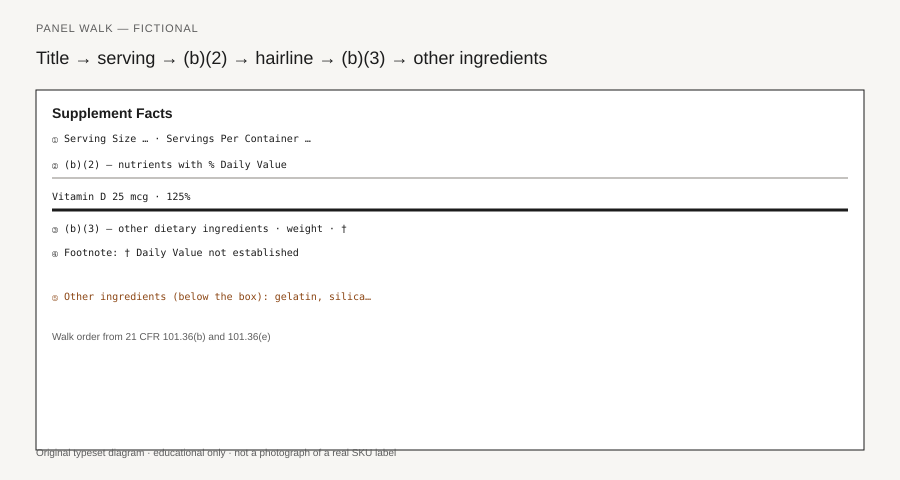

Supplement Facts label literacy — sample embed (article 02)
Staging preview only. See
FIGURE_SEO.md
and
RIGHTS.md
.

Figure.
Walk order from 21 CFR 101.36(b) and 101.36(e); the heavy bar separates (b)(2) from (b)(3).
Original typeset diagram; fictional panel — not a real product label.